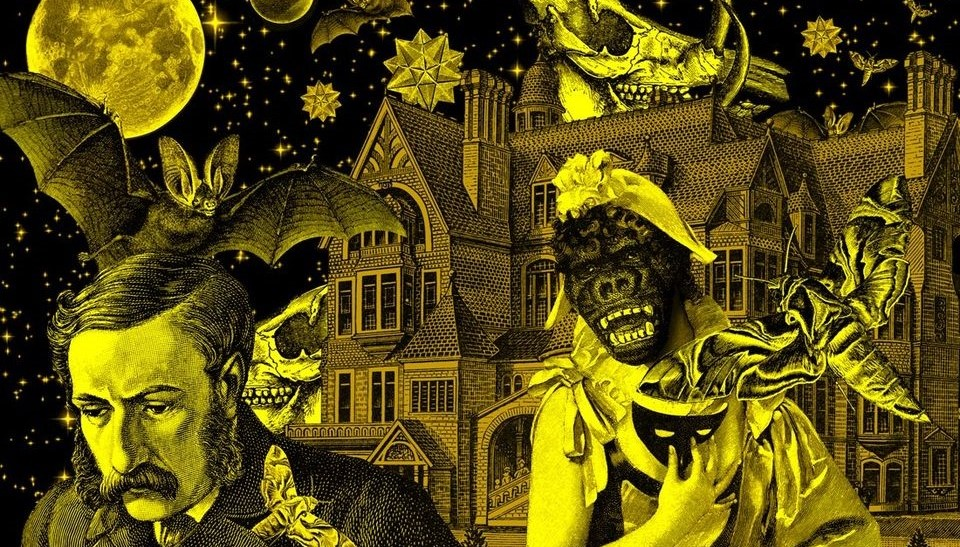
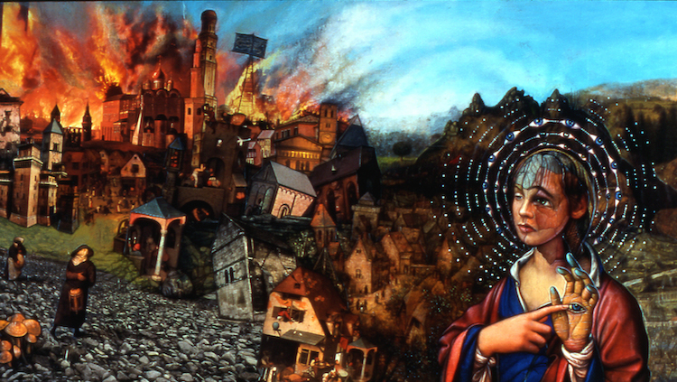

TUHAF KURGU
-
Spekülatif kurgunun bir alt dalı olarak 19. yüzyılın başı ile 20. yüzyılı başı arasında
doğan Tuhaf Kurgu, hayaletler, vampirler ve kurtadamlar gibi bilindik olağanüstü kurgu
unsurlarından kaçınarak ya da yeniden yorumlayarak oluşmuş korku edebiyatının alt türüdür.
-
İngiltere’de Arthur Machen, Algernoon Blackwood, William Hope Hodgson, M.R. James ile ses
bulan
tür, Amerika’da 1923’de yayınlanmaya başlaması ile H.P. Lovecraft, Clark Ashton Smith,
August
Derleth,Fritz Lieber, Robert Bloch gibi türün önemli yazarlar sayesinde daha geniş bir
kitleye
ulaşıyor.

SİPARİŞ KOŞULLARI
-
Front-end eğitimlerinin başında olunduğundan şuan sadece IBAN ile ödeme alınmaktadır. İlerde belki bir payment geçidi olabilir.
-
İKi kategoride eserler hakkında bilgi almak için menüden sayfalarını ziyaret edebilirsiniz.
- Tuhaf Kurgu Kitapları
- Tuhaf Kurgu Araştırmaları Kitapları
- Sipariş vermek istediğiniz kitabı iletişim sayfasındaki mail adresine iletişim bilgileriniz
ve
toplam yaptığınız ödemeyi gösterir banko dekontu ile tarafımıza ilettiğinizde ertesi gün
kargolanacaktır.
